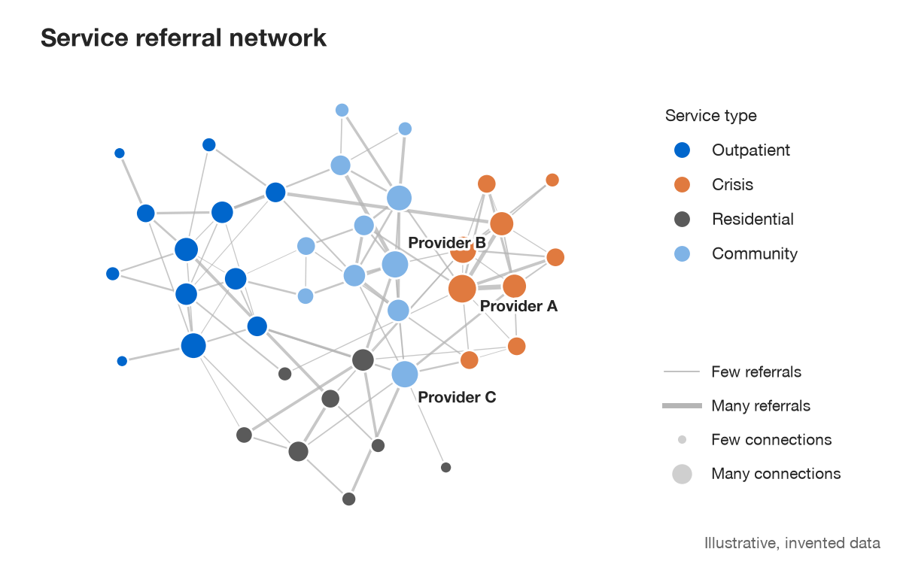
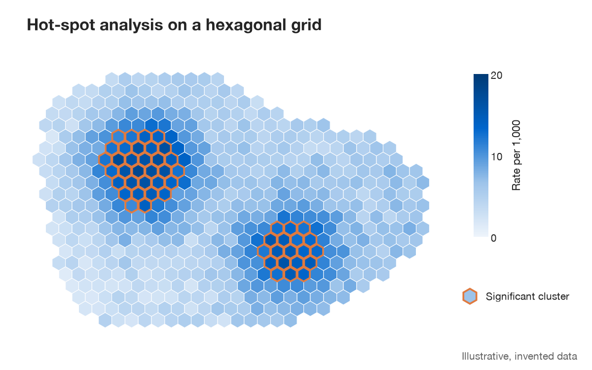
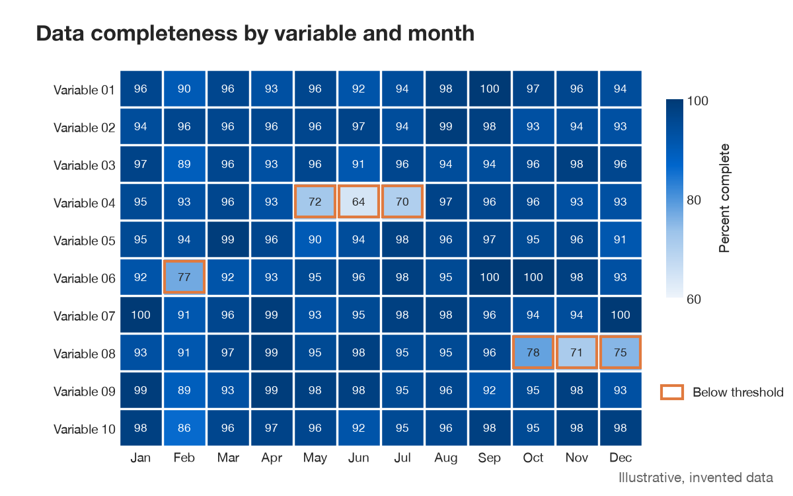

A private budget tracker for logging each spend as it happens and watching monthly totals build up by category. Charts show the current month by category and the last six months side by side, and data stays in the browser, with optional sync across devices and CSV export.
Built with: HTML, Chart.js; installable as a web app
A personal time-tracking web app with a built-in Pomodoro timer: create tasks, track time on each, and work in focus periods with breaks. Tracked time appears on a daily timeline as it accrues, and data syncs across laptop and phone.
Built with: JavaScript, HTML, CSS, Supabase, GitHub Pages
A browser-based typing trainer that has you type real words and sentences while it finds the few keys you are weak on and drills those. A separate beginner course teaches key locations one at a time, with the correct finger shown for every key.
A graph-based spaced-repetition tool: you build a spatial graph of ideas and study it by reconstructing it from memory. Due nodes light up on the graph, hints are given only as needed, and reviews are scheduled with FSRS. It works fully offline, with optional cloud sync.
Built with: TypeScript, React, Vite, React Flow, ts-fsrs, Dexie/IndexedDB, Supabase
A private daily habit tracker with one-tap check-ins, streaks, stats, and custom reminders. It is a native app for iPhone and Mac, rebuilt from an earlier web app so that reminders reach the lock screen even when the app is closed.
Built with: SwiftUI, Swift Charts
Rent vs. Own Calculator (Sammen)
Owner and renter net worth over 30 years
A rent-versus-buy net-worth comparison for Sammen buildings, run per property and unit type: one person buys a unit, the other rents it and invests the difference, and the model asks who is worth more if each cashed out at the end of every year for 30 years. It applies selling costs, capital-gains tax on both sides, and California's Proposition 13 cap, and reports the year owning pulls ahead for good. The same model runs as a Python engine and as a self-contained HTML calculator.
A recipe app for a circle of friends in which recipes and ingredients live in a Neo4j graph. Recommendations come from graph traversal (shared ingredients, friends' ratings, and pantry matching) rather than a black-box model, and new recipes are structured into the graph from pasted text or photos.
Built with: Neo4j, Next.js (React), Tailwind, Claude API
A citator kept as plain files: one record per case, with its holdings as verbatim quotes, and one list of the relations between cases (which case cites, follows, distinguishes, questions, or overrules which), each carrying the citing passage. Scripts list a case's citers from two public indexes, scan every published citer for treatment language, and reduce the result to a red, yellow, green, or grey signal that states its own coverage. A four-rung status ladder records how far each case has been checked, and a checklist generated for each filing lists every case it cites for a final check on Lexis.
Built with: Python, NetworkX, YAML, CourtListener API
Assembles a mediation brief and its exhibits into one hyperlinked PDF. The brief is drafted from an outline in which every factual sentence is tied to an exhibit and every case is quoted from the opinion. Scripts apply edits as Word tracked changes for review, export the brief with a working table of contents and bookmarks, build the exhibit volume with an index and cover pages, and link each index row and each exhibit cite in the text to its exhibit.
Case-law retrieval
Retrieves and reads the full text of United States court opinions whenever a case will be characterized, cited, quoted, or relied on. It enforces one rule: no case is characterized without a verbatim quote from the opinion. It also verifies that citations exist and takes official-reporter pin cites from star-paginated sources.
Evidence extraction
Turns raw personal-device evidence into citable exhibits. A complete text-message thread is pulled from the macOS Messages database by number and date range and rendered as a chronological, verbatim transcript PDF. A Gmail export, which reprints every message inside each reply, is reduced to one clean chronological email exhibit.
Redline
Produces a Word document with real tracked changes, so the reader can accept or reject each edit individually in Word's Review ribbon.
Operative version
Before a document that exists in more than one version is quoted or characterized, establishes which version is operative (the one filed, sent, or served) and says which one was read.
Verify the predicate
Before saying that a rule prohibits, requires, permits, or exempts something, checks that the rule's trigger condition is true of the situation. Quoting a rule proves that it exists, never that it applies.
Data Science
Behavioral-health network analysis (UC San Diego Health)

Illustrative figure, invented data
A network-analysis tool to optimize behavioral-health services across San Diego County, pitched to County Behavioral Health, which adopted it. It is fed by a pipeline that cleans protected health information, provider and other data, with Tableau dashboards for stakeholders.
Housing capstone project (UC San Diego)
Illustrative figure, invented data
A graduate capstone that collected Zillow listings, Yelp business data and 36 Census variables into PostgreSQL, then used XGBoost, random forest, multilevel and spatial regression models to identify high-value homes for low-income families. Results were presented in a Dash and Plotly dashboard and an ArcGIS StoryMap.
Extracts and structures LoopNet offering memoranda into a comparables dataset. A hedonic pricing model is fit to the data and cross-checked against raw comparables.
spatial_package

Illustrative figure, invented data
Functions for spatial analyses.
fspackage

Illustrative figure, invented data
Data quality checks on FSP.
Built with: R
About
I am James Ades, a data scientist in San Diego, and I build data science tools and apps. I hold a Master of Science in Data Science and Engineering from the University of California, San Diego, and have worked as a data scientist at UC San Diego Health and as a research associate at NEAT Labs. I am also the founder of Sammen, a San Diego housing company that organizes buyers into ownership groups for small multifamily buildings.